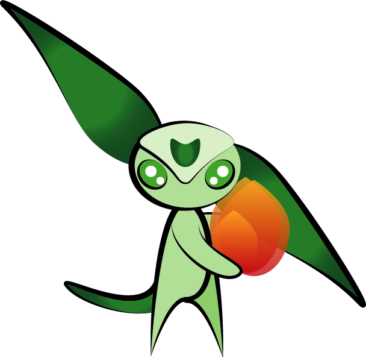
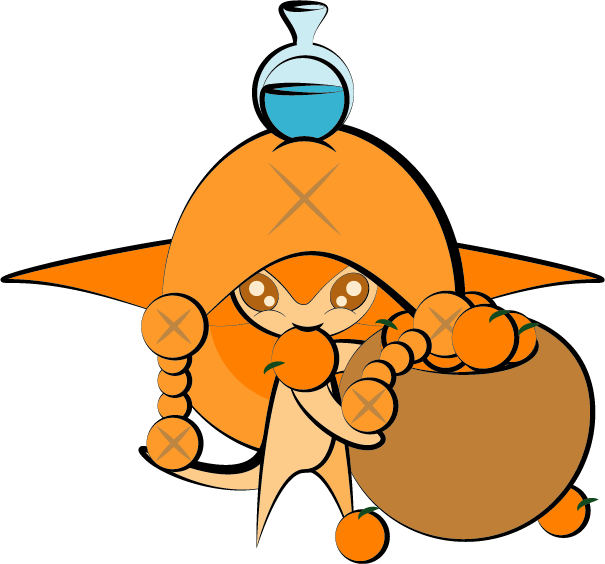
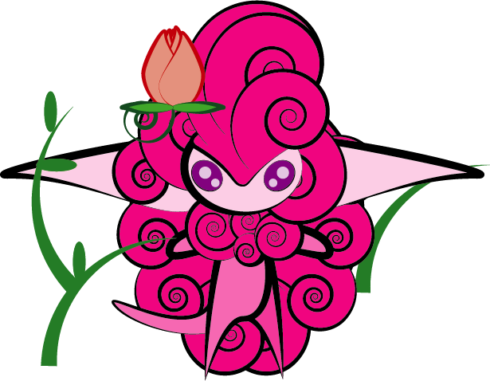
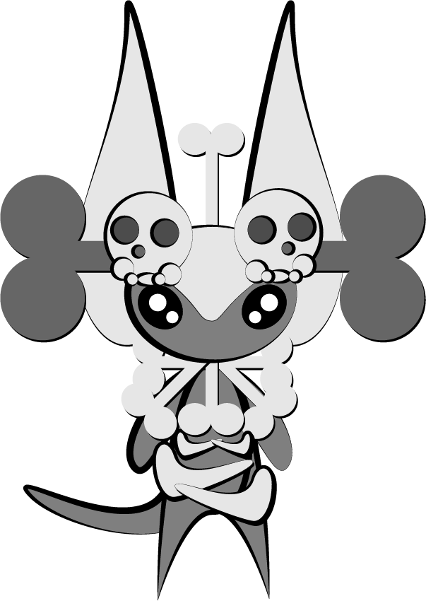
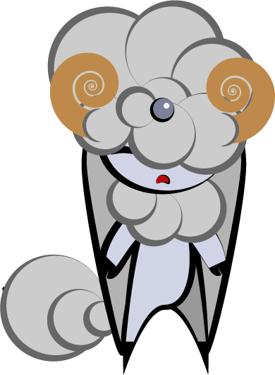
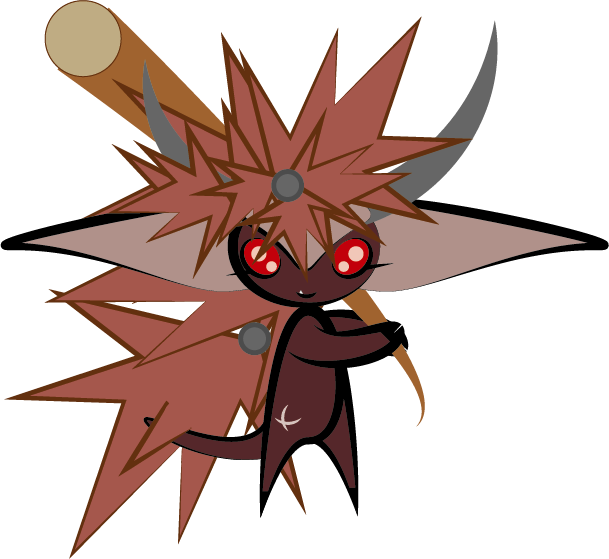

Their green eyes can observe and copy the properties of the elements around them, to make them as strong as the other imps...
They obsorb countless amounts of knowlegde for the other imps of the island to gain intelligence about their world...
Their eyes are a lovely shade of purple, with the ability to control the plats around them...
Their eyes and bodies are a monochrome mix of black and white, they never leave their equally colorless lands...
Their bodies are in a permant, self inforecs state of rest, never opening their eyes, and using psycic energy to move...
The most honest and gullible of the imps they work for little to nothing and very strong, rugged and durable...
